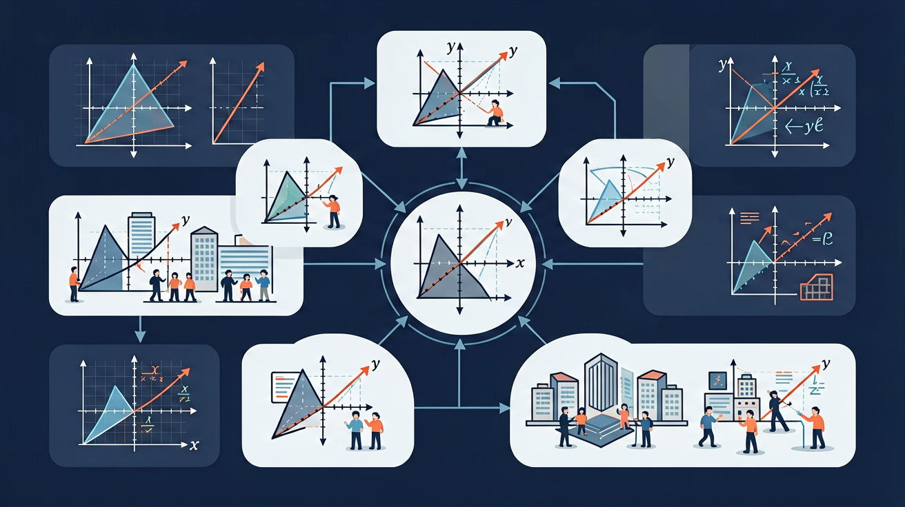

❓ 为什么轮胎和地面接触的线叫切线？
❓ 切线到底和圆有几个交点？
❓ 画切线时为什么要用三角板？
学完这一课，这些问题你都能自信地回答。
🎯 能说出切线的定义和判定条件
🎯 能判断给定直线是否与圆相切
🎯 能计算简单图形中的切线长

1. 一条直线与圆有几种位置关系？
2. 直线d与圆心O的距离r'与半径r的关系，直线与圆相切时？
骑自行车时，轮子接触地面的那一点——And地面与车轮（圆）只有一个接触点；But如果地面与轮子有两个交点，车轮就会"陷进"地面；Therefore正常行驶时地面就是车轮的"切线"——只有一个切点，且切线垂直于轮轴半径！
判断：过圆上一点作圆的切线，该切线有几条？
直线l切圆O于点A，OA=5（半径），OB⊥l（B在l上），∠AOB=90°，则OB=？（即圆心到直线距离）
从圆外一点P往圆上拉一根"接触线"（切线）——And可以向左拉，也可以向右拉，得到两个切点；But你会发现这两段切线（从P到切点）竟然完全相等；Therefore从圆外一点引圆的两条切线，切线长相等！
圆O半径r=3，圆外点P到圆心距离OP=5，从P作圆的切线PA（A为切点），PA长为？
从圆外点P引两切线PA、PB（A,B为切点），∠APB=60°，则∠AOB=？
从圆外点P引两切线PA、PB，∠OPA=30°，则∠AOB=？（O为圆心）
自行车轮（圆形，半径r=30cm）滚在平坦地面上。当轮轴（圆心O）距地面某一点A的距离OA=50cm时，求从地面上A点作圆的两条切线的切线长，以及两切线之间的夹角。
1. 切线与过切点的半径的关系是？
2. 圆O半径5，点P在圆外，OP=13，从P作切线PA，则PA=？
3. △ABC内切圆（半径r=2）分别切三边于D、E、F，AB=7，BC=6，AC=5，则BD=？
4. 判断：过圆内一点（非圆心）能作圆的切线。
车轮在地面上滚动时，地面始终是切线，这是圆形轮子顺滑滚动的根本原因
卫星天线的焦点与切线——抛物线与圆的切线关系在通信技术中的应用
水面上圆形波纹与障碍物的切线——波动的绕射与切线几何
切线是微积分中"导数"概念的几何基础——曲线在一点的切线方向就是该点的导数
先独立作答，再点选项查看对错与错因。
如图，PA是⊙O的切线，A为切点，PO=10cm，半径OA=6cm，则PA的长度为
下列命题正确的是
从圆外一点P向⊙O引切线PA和割线PBC，若PA=8cm，BC=5cm，则PB的长度为
如图，AB是⊙O的直径，AC是切线，若∠BAC=30°，则∠B=____°
答案：60
切线垂直于直径，∠CAB=90°，故∠B=180°-90°-30°=60°
若圆的半径为5cm，圆心到直线的距离为5cm，则直线与圆的位置关系是____
答案：相切
距离等于半径时直线与圆相切
关于圆的切线，下列说法正确的是
用直尺和圆规作已知圆的切线
切线是刚好碰到圆的直线，像轻轻擦过篮球表面的手指
圆心到切线距离=半径，这个性质是解题关键
割线穿过圆，切线只接触一点，就像刀切西瓜的瞬间
观察自行车轮与地面的接触线，理解实际应用
用切线性质解决路灯照射范围问题
✅ 强调唯一交点，用反证法演示
💡 受割线图像干扰
✅ 用尺规作图验证垂直关系
💡 死记定义不验证
口诀：切线切线，一点相见；垂直半径，牢牢记心间
类比：像溜冰时冰刀在冰面留下的痕迹，只接触一瞬间
下列哪条直线是圆的切线？
切线长定理适用于：
（中考题）如图，PA、PB切⊙O于A、B，∠APB=60°，则∠AOB度数为
（迁移题）路灯距地面8米，照射形成的光斑半径6米，此时灯柱与地面的夹角正切值为
作已知圆的切线需要：
开放任务：用三步写出你如何向同学讲清「切线」。